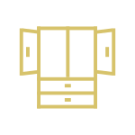

Onderkast wastafel
Voor de onderkast van je wastafel kun je alle kanten op. Je kunt ervoor kiezen om geen onderkast onder de wastafel te nemen. Helaas wijst de praktijk vaak uit dat in een mum van tijd toiletartikelen en handdoeken door de badkamer zwerven. Vaak kiezen mensen daarom wel voor een onderkast. Een goede onderkast van een wastafel is dus met name functioneel. Dat neemt niet weg dat hij stijlvol moet zijn en moet passen bij de rest van de badkamer. De belangrijkste zaken waar je op moet letten bij het kopen van een onderkast hebben we voor je op rij gezet.
Materialen & kleuren
De stijl van de badkamer wordt grotendeels bepaald door het badkamermeubel. Het is dus belangrijk dat de onderkast bij de wastafel past. Hou je van natuurlijke materialen? Dan is hout wellicht een goede keuze. Hierbij passen ook rustige kleuren zoals wit, grijs en zwart. Onderkasten in fellere kleuren of in hoogglans zijn geschikter voor wie een meer gewaagde of modernere stijl wil in zijn badkamer. Daarnaast kun je allerlei combinaties maken. Denk bijvoorbeeld aan kunststof met hout of wissel een glanzende afwerking af met een matte afwerking.

Kastjes of lades
Vroeger bestond een onderkast van een wastafel vaak uit één of twee kastjes. Tegenwoordig zijn dit steeds vaker lades. Hiervoor zijn allerlei variaties te bedenken: één lade, dubbele lades of een lade in een lade. Deze zijn vrijwel altijd uitgerust met soepele ladegeleiders of een soft-close techniek. Word jij blij van een strak design? Dan is een push-to-open lade een fijne optie omdat hier geen grepen zichtbaar zijn. Hiermee krijg je met één aanraking de lade geopend.
Afmetingen & vormen: een brede of compacte kast
Wanneer je een grote badkamer hebt maakt de afmeting van je badkamermeubel misschien niet uit. Maar het kan zijn dat je een kleinere badkamer hebt. Of je wilt graag een kleiner badkamermeubel op het toilet of in je slaapkamer. Dan kies je eerder een compact model. Niet alleen afmetingen maar ook de vorm kan dan een groot verschil maken. Denk bijvoorbeeld aan ronde vormen of een kastje dat makkelijk onder een wastafel in een hoek geplaatst kan worden. Ook voor grotere onderkasten is de vorm belangrijk. Rond, ovaal, vierkant, rechthoekig: je kunt het zo gek niet bedenken of het is verkrijgbaar bij badinstallaties. Voor een strakke of moderne stijl zijn rechte lijnen zoals een vierkant aan te raden. Een ovaal of rond kastje past meer bij een landelijke of natuurlijke look.
Heeft u vragen over onze diensten of behoefte aan vakkundig advies? Heeft u (ver-)bouwplannen of bent u toe aan een nieuwe badkamer of toilet? Graag uitnodigen wij u uit om contact met ons op te nemen.
Wij hebben al vele mooie “droom” badkamers mogen realiseren over geheel Nederland, o.a. Regio Utrecht, Zuid-Holland, etc. Wij helpen u natuurlijk graag! Neem vrijblijvend telefonisch contact met ons op 0851302688 of stuur ons een e-mail bericht info@badinstallaties.nl